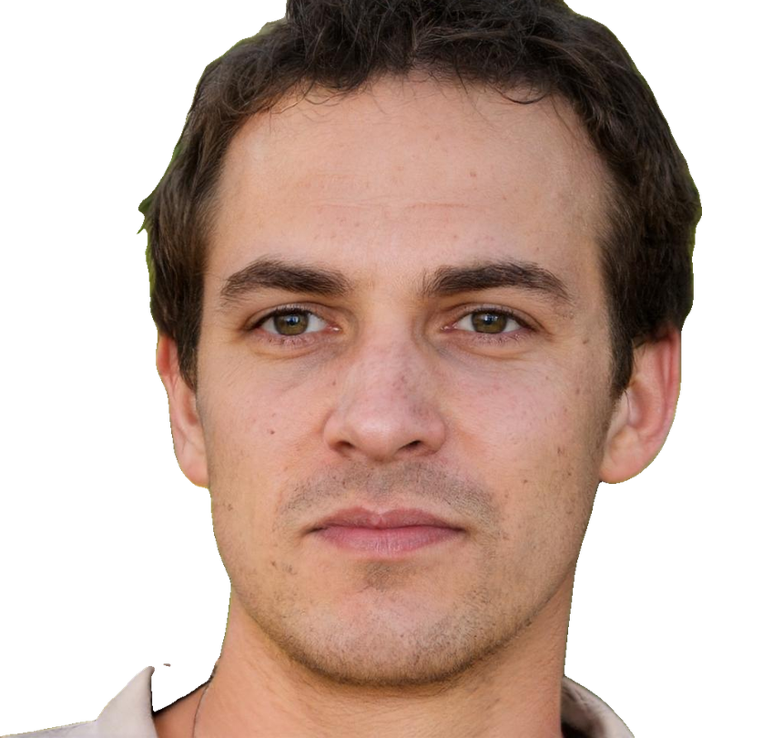
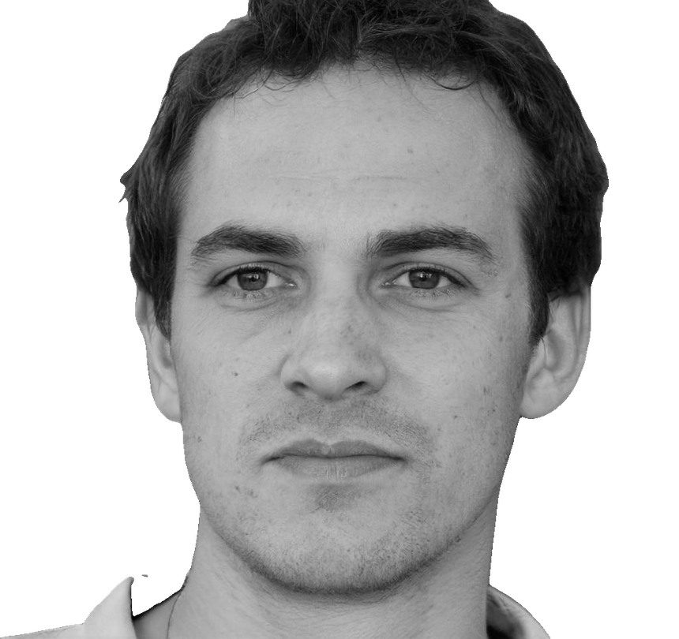

Hello,
I'm Andy Seymour
Software engineer in London. I write trading strategies in C++ and Python at Gambit Research.
Hello,
Software engineer in London. I write trading strategies in C++ and Python at Gambit Research.

I joined Gambit Research in 2019 to lead the data team, moved to internal tools, and now write trading strategies in C++ and Python. Before that I spent four years at IBM and started out writing safety-critical software for the Typhoon and F-35 at BAE Systems.
Hi, I'm
Software engineer. I write trading strategies in C++ and Python at Gambit Research.
Software engineer, London
I write trading strategies in C++ and Python at Gambit Research.

Hello, I'm
Software engineer in London. Trading strategies in C++ and Python at Gambit Research.
Hello,
Software engineer at Gambit Research in London, writing C++ and Python. Previously IBM and BAE Systems.